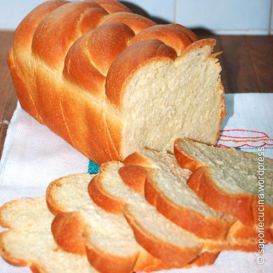

Cocktail per la colazione e l'hangover: le ricette di Salvatore Calabrese
 + Italiano Leggi Guarda Attualità Cultura Musica Cibo Tecnologia Identità Salute Leggi Guarda Attualità Cultura Musica Cibo Tecnologia Identità Salute About Partner Jobs VICE MEDIA PRIVACY POLICY Privacy & Terms © 2021 VICE MEDIA GROUP Foto di Janos Grapow per gentile concessione di Salvatore CalabreseQuali cocktail si possono bere di mattina secondo un famoso bartender
Salvatore Calabrese, maestro di mixology, un giorno mi ha detto che c'è un drink per ogni ora. Anche per la colazione e per risolvere l'hangover. di Andrea Strafile Rome, IT 24.7.20 Facebook Twitter Snap"Mia madre provò a svegliarmi, ma non c'era verso che mi alzassi. Senza dire nulla mi diede un cocktail di limone, albume, peperoncino con uno shot di marsala"
Oggi siamo abituati a cocktail sempre più creativi, fatti di fermentazioni e sperimentazioni e ri-distillazioni e rivisitazioni. Ma soprattutto siamo abituati a bere gli stessi drink dall'aperitivo al dopocena, sempre quelli, senza che ci sia una distinzione. Ci siamo dimenticati qualcosa che fino a qualche anno fa era fondamentale: ogni momento della giornata ha il suo cocktail .
Colazione compresa.
CiboHo chiesto a due bartender famosi come fare un Martini Cocktail come si deve
Andrea Strafile 25.6.20Sebbene questo pezzo rischi di sembrare solo una guida per un perfetto ubriacone, a ricordami che anche la mattina ha i suoi drink c’è Salvatore Calabrese , conosciuto come The Maestro , uno dei bartender più famosi al mondo che oggi è alla guida del The Donovan Bar di Londra.
Calabrese ha iniziato a fare cocktail a dodici anni, nella sua Costiera Amalfitana, in piena Dolce Vita. Ormai sono più di quarant'anni che serve da bere a persone come Stevie Wonder, la Regina d'Inghilterra e magnati che vedono nella sua rara collezione di cognac antichi un ottimo modo di spendere i propri soldi. Ha inventato uno shaker , il drink più antico del mondo fatto con alcolici rari risalenti fino al 1770, e ha scritto un famosissimo libro su come ripigliarsi da una sbronza colossale: Hair of The Dog .
Un chirurgo di fama mondiale, la mattina dopo aver bevuto molto, entra nel locale mezzo morto e mi chiede di fargli un beverone con aglio, cipolla, arancia, miele e tequila, shakerato. Ed è tornato a essere umano. La cipolla e l'aglio fanno bene al sangue diciamo intossicato."
Visto che siamo in tema, ha anche inventato un cocktail che si chiama Breakfast Martini fatto con marmellata d'arance (il richiamo alla colazione), gin, Cointreau e limone. No, non sostituisce una colazione equilibrata. Sul serio. Non consigliamo di bere solo quello a stomaco vuoto.
Quando ero al Dukes a Londra avevamo un menu molto più grande di quelli che ci sono adesso, mi dice Salvatore. C'erano circa 50, forse anche 60 ricette, ed erano divise nei vari momenti della giornata. L'aperitivo, per regola, va da mezzogiorno alle cinque. Poi per il pre-cena si passa a qualcosa di più forte, i cosiddetti Re dei Cocktail, come Martini Cocktail e Negroni. E alla fine c'è il dopocena, il momento più importante, dove finire in bellezza. E qui si possono bere drink come lo Stinger o il Grasshopper . Ma anche qualcosa a base champagne, come il French 75 .
CiboC'è una radice asiatica miracolosa che ti fa passare l'hangover
Andrea Strafile 30.12.19E se anche la sera prima hai esagerato, la mattina si può ricominciare, anche se qui bisogna fare una distinzione tra quelli che sono i cocktail da sorseggiare la mattina per arrivare a lavoro belli allegri e quelli che, invece, sono presumibilmente anti-hangover.
Per il bene di tutti, direi di iniziare dai secondi.
"Per combattere i postumi da sbornia devi ricominciare la giornata con quello che ti sei finito di bere la sera prima"
CiboEcco come la moda del gin ha quasi distrutto la Londra del XVIII secolo
Harry Sword 5.10.17Chiedendo scusa ai miei colleghi, ho scritto Hair of the Dog , un libro con 80 drink che aiutano a combattere l'hangover. E mi spiega cosa c'entrano i peli di un cane con la vostra sbornia. È un detto inglese: significa che per combattere i postumi da sbornia devi ricominciare la giornata con quello che ti sei finito di bere la sera prima. In pratica secoli fa si credeva che, se un cane ti avesse morso, avresti dovuto prevenire la rabbia affrontandolo e prendendogli dei peli da mettere sulla ferita. Se volete anche sapere perché si dica hangover per indicare i postumi da sbronza ci aiutano sempre gli inglesi: in pratica se eri povero e non sapevi dove dormire (e molti di questi signori erano poveri e alcolizzati), c'erano delle specie di dormitori fatti solo da corde. Per pochissimi soldi potevi addormentarti sulla corda (da to hang , appendersi).
Cocktail da colazione anti-hangover
La prima delle ricette del libro è dedicata a mia madre. L'ho chiamato Rosa's Magic Cure , mi dice Salvatore. Viene da quando una sera mi andai a divertire e scoprì il Brandy Alexander e la mattina dopo, quando mia madre provò a svegliarmi, non c'era verso che mi alzassi per andare a lavoro. Non disse nulla e mi diede un cocktail di limone, albume, peperoncino e uno shot di marsala .
CiboColazione al Negroni
Jacques Bezuidenhout 27.12.17A parte bere un alcolico simile a quello della sera prima, l'acidità del limone l’aveva risvegliato, il peperoncino l'aveva risvegliato come si deve , l'uovo gli aveva dato energia e il marsala era dolce, piacevole. Ma ogni bevitore serio ha il proprio rimedio. Un chirurgo di fama mondiale che è tuttora mio cliente aveva bevuto molto. La mattina dopo entra nel locale mezzo morto e mi chiede di fargli un beverone con aglio, cipolla, arancia, miele e tequila, shakerato. Ed è tornato a essere umano. La cipolla e l'aglio fanno bene al sangue diciamo intossicato.
Il classico Bloody Mary
CiboBloody Batra
Harneet Baweja and Nirmal Save 30.1.18Per allacciarci invece a quelli che sono i cocktail che vi potete scolare dalla prima mattina al pranzo, partiamo da un cocktail che è a metà tra l'anti-hangover e il puro piacere di bere la mattina: il Bloody Mary. Per aiutare la sbronza il Bloody Mary è ottimo, mi dice ancora il Maestro. C'è sempre il limone e una parte piccante che ti sveglia per bene. Ed è ricco di vitamine e sali minerali. Ma è anche piacevole se state per fare una colazione tarda e abbondante o per il brunch. Di fatto state ingurgitando già una sostanziosa parte di cibo in forma liquida, che aiuta l'appetito. Se vi venisse voglia di fare un Bloody Mary: 50ml di vodka (o gin), 20ml di succo di limone, 125ml di un buon succo di pomodoro e poi condite con salsa Worcestershire, tabasco, sale e pepe. I bartender fanno tutta una roba fica lanciandolo in aria, il throwing . Che potete tranquillamente esercitarvi a fare a casa se volete fare i fighi.
Altrimenti il Maestro dice che si può tranquillamente costruire nel bicchiere highball e tanti cari saluti. E se non volete un Bloody Mary classico potete provare il Bull Shot (anche se non si trova quasi mai nei bar) in cui, sostanzialmente, si sostituisce il succo di pomodoro con, udite udite, un sacco di consommé di manzo.
Cocktail con bollicine
"Il Bellini è praticamente una replica del vino che si beveva dalle mie parti, nel Sud Italia, quando mettevi nel vino giovane delle pesche per togliere l'acidità"
Tra i tutti i cocktail da bersi la mattina, uno è il simbolo assoluto della colazione: il Mimosa . E in genere infatti nella sala colazioni dei grandi alberghi si trova sempre. Se la sera prima vi siete bevuti un Old Cuban (che è come un Daiquiri ma con top di champagne), dice Calabrese, il Mimosa o il Buck's Fizz sono drink incredibili per iniziare la giornata. Sempre pensando che la sera dopocena dovreste bere qualcosa a base cognac o champagne. È un cerchio che si chiude: finire come hai iniziato e viceversa.
CiboI vegani hanno hangover peggiori degli altri
Shamani Joshi 8.1.20Il Mimosa o il Buck's Fizz (la differenza è che il primo è fatto di parti uguali di champagne e succo d'arancia, il secondo sono due parti di champagne e una di succo, NdR ) sono bei drink da bere a colazione. Sono gentili e ti aiutano a ricominciare con ciò che hai consumato la sera prima. Alla fine il succo d'arancia c'è, quindi la vostra parte di vitamine ve la siete presa alla grande.
Sempre sulla stessa linea c'è il Bellini , il popolarissimo cocktail inventato da Giuseppe Cipriani a Venezia. Il Bellini è praticamente una replica del vino che si beveva dalle mie parti, nel Sud Italia, quando mettevi nel vino giovane delle pesche per togliere l'acidità, mi racconta ancora Salvatore Calabrese. Cipriani non ha fatto altro che prendere la pesca più fresca e con più aromi, quella bianca, e aggiungerla al prosecco. Ma la filosofia dietro è vecchissima. Filosofia a parte, il Bellini è sicuramente è un'ottima alternativa al caffè. Ma si può dire che ci sia tutta una categoria fatta di bolle e succo di frutta che ci sta bene a colazione: roba come il Puccini (mandarino), il Rossini (fragola) e il Tintoretto (col melograno, bomba atomica).
CiboDopo i cocktail alla cannabis light ho capito che l'erba è meglio berla
Carlo Spinelli 21.2.18Nella lista di cocktail che avete il diritto di bere la mattina potremmo aggiungere il Garibaldi , succo d'arancia e bitter, giusto perché c'è il succo d'arancia e un po' di Campari che può aprire lo stomaco prima del pranzo e, beh, il caffè corretto col mistrà . La mattina impone dei sapori che non facciano iniziare la giornata nella maniera sbagliata, quindi i grandi classici a base di succhi e bolle vanno benissimo.
Per la stessa ragione l'etichetta non impone nulla, ma suggerisce che bere un Negroni alle 11 di mattina forse non è il massimo. Immaginatevi un cocktail a base di gin e bitter appena svegli: non è molto attraente eh? O quantomeno non lo è come a sera, sul divano, dopo una giornata di lavoro.
Questo perché ogni ora del giorno ha il suo cocktail. Non ho idea del perché ci siamo persi questa abitudine per strada, ma tornare a bere il giusto drink al momento giusto, secondo me sarebbe una figata.
Segui Andrea su Instagram
Segui MUNCHIES su Facebook e Instagram
Tagged: Munchies Cocktail drink Hangover colazione Pubblicità About Partner Jobs VICE MEDIA PRIVACY POLICY Privacy & Terms © 2021 VICE MEDIA GROUP